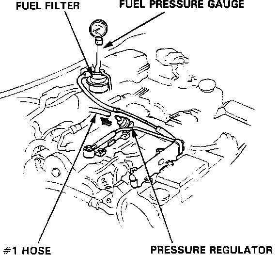

Fuel Pressure: Testing and Inspection
Fuel Pressure:

WARNING: Do NOT smoke during the test. Keep open flames away from your work area. Be sure to relieve fuel pressure while engine is off.
ATTACH FUEL PRESSURE GAUGE
1. Disconnect battery ground cable.
2. Remove fuel tank filler cap.
3. Use a box end wrench on the 6mm service bolt at the top of the fuel filter, while holding the special banjo bolt with another wrench.
4. Place a rag or shop towel over the 6mm service bolt and SLOWLY loosen the bolt one full turn.
5. Remove the service bolt from the banjo fitting.
6. Install the fuel pressure gauge hose to the service port.
CHECK FUEL PRESSURE
1. Start engine and note fuel pressure.
With vacuum hose (#1 in illustration) disconnected, pressure should be:
36-41 psi (2.55-2.85 kg/cm2)
2. Turn off engine and note rest (residual) pressure.
Pressure should not drop below 28 psi after 10 minutes.
IF PRESSURE IS NOT AS SPECIFIED:
1. Check fuel pump operation. If OK, check the following:
2. Fuel pressure higher than specified
a. Pinched or clogged fuel return line or hose
b. Faulty fuel pressure regulator
3. Fuel pressure lower than specified
a. Faulty fuel pressure regulator
b. Leaking fuel lines
c. Clogged fuel filter
4. Residual pressure drops too quickly
a. Leaking fuel supply hose
b. Faulty fuel pump check valve
c. Faulty fuel pressure regulator
To isolate rest pressure component failure, turn OFF the ignition switch and immediately pinch the fuel return hose at the fuel pressure regulator. If rest pressure continues to drop, replace the fuel pump check valve. If fuel pressure holds, replace the fuel pressure regulator.